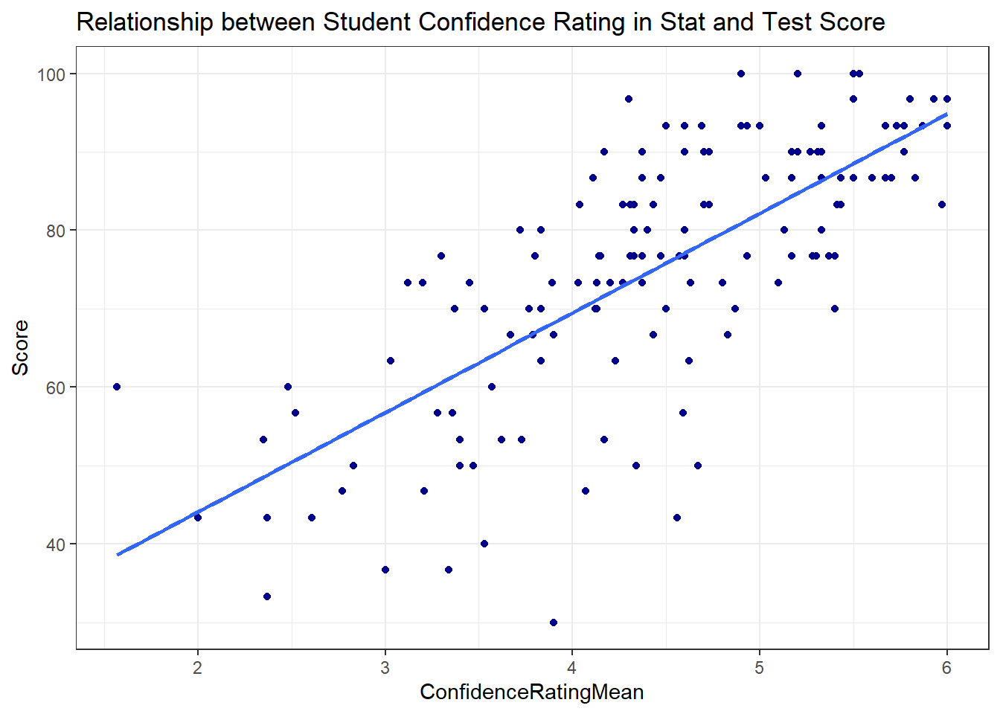

library(tidyverse)
library(mosaic)
library(rio)
library(car)
math <- import('https://byuistats.github.io/BYUI_M221_Book/Data/MathSelfEfficacy.xlsx')Simple Linear Regression
Review
Consider the relationship between Score on a math exam and a student’s self-reported Confidence Rating.
Question: What is the explanatory variable, \(x\)?
Answer:
Question: What is the response variable, \(y\)?
Answer:
Plot the relationship:
ggplot(math, aes(x = ConfidenceRatingMean, y = Score )) +
geom_point(color = "darkblue") +
theme_bw() +
labs(
title = "Relationship between Student Confidence Rating in Math and Test Score"
) 
Question: Based on the scatterplot, does the relationship appear roughly linear?
Answer:
Question: What is the direction of the relationship? Answer:
Question: What do you think is the strength of the relationship? (Strong/Moderate/Weak) Answer:
Question: What is the correlation coefficient, r? Answer:
cor(Score ~ ConfidenceRatingMean, data = math)[1] 0.7278648Linear Regression
Recall that the correlation coefficient, \(r\), tells us something about the direction and strength of a linear relationship.
A scatter plot can visualize the nature of the relationship between 2 quantitative variables.
Fitting a simple linear regression model provides a way to predict what happens, on average, to response variable, \(y\), for a given input, \(x\).
We can use data to estimate a functional relationship between \(x\) and \(y\):
\[y = \beta_0 + \beta_1x_1 +\epsilon\]
This is a reframing of the familiar \(y=mx+b\) but we change the intercept and the slope to be Greek letters signifying population parameters. We also add a very important term, \(\epsilon\), which signifies the “error” around the line. Our estimate of error, \(\epsilon\), will be critical to assessing the usefulness of our model.
We can estimate the slope and intercept of the line that “best fits” the data and use that line to make predictions.
NOTE: As before, Greek letters signify population parameters in statistics while Latin letters are often used for sample statistics. We estimate \(\beta_0\) and \(\beta_1\) with \(b_0\) and \(b_1\) respectively. This leads to an equation for predicted values:
\[\hat{y}=b_0+b_1x_1\] where \(\hat{y}\) signifies a predicted value for \(y\) for a given \(x\).
Define “best”
There are several ways we could fit a line through the dots of a scatter plot. To define “best” we have to understand something called a “residual” in statistics.
DEFINITION: A residual is calculated for each data point by taking the difference between the observed value and the expected value:
\[\text{residual}=\text{observed}-\text{expected}\]
Residuals can be positive or negative depending on whether or not an observation is above or below the expected value.
For regression analysis, the expected value is the regression line. This is what happens, on average, for a given value of \(x\). Residuals look at the difference between the points and the regression line:

The regression line is the line that minimizes the squared residuals and is considered the “best fit” line.
If our simple linear model adequately explains the relationship between \(x\) and \(y\), the residuals should have the following properties:
1. Are normally distributed
2. Have constant variance across the range of predicted valuesWe will show how to evaluate these conditions below when discussing the hypothesis test requirements. But you can visualize what this looks like in the following graph:
 Notice the normal distributions centered at the line all have the same standard deviation across the whole range of \(x_i\).
Notice the normal distributions centered at the line all have the same standard deviation across the whole range of \(x_i\).
In R
Recall that when we had a quantitative response variable and a categorical explanatory variable we could use the favstats() and boxplot()with the general formula:
favstats(data$response_variable ~ data$explanatory_variable) boxplot(data$response_variable ~ data$explanatory_variable)
The same paradigm works for estimating the linear relationship between 2 quantitative variables, but we need to introduce a new function: lm(). The ‘lm’ stands for “linear model”. The relationship notation remains the same:
lm(data$response_variable ~ data$explanatory_variable)
or equivalently:
lm(response_variable ~ explanatory_variable, data = dataset_name)
except \(x\) and \(y\) are both quantitative. The lm() output by itself doesn’t give us test statistics and p-values. We will use an additional function, summarize(), to get the relevant information for the hypothesis test.
Let’s fit a linear model estimating the slope and intercept of the line that best fits the relationship between Confidence Rating and Test Score.
Start by naming the lm() output, then do a summary on our named object:
math_lm <- lm(Score ~ ConfidenceRatingMean, data = math)
summary(math_lm)
Call:
lm(formula = Score ~ ConfidenceRatingMean, data = math)
Residuals:
Min 1Q Median 3Q Max
-38.200 -6.163 1.292 7.567 23.422
Coefficients:
Estimate Std. Error t value Pr(>|t|)
(Intercept) 18.690 4.610 4.054 8.4e-05 ***
ConfidenceRatingMean 12.695 1.022 12.424 < 2e-16 ***
---
Signif. codes: 0 '***' 0.001 '**' 0.01 '*' 0.05 '.' 0.1 ' ' 1
Residual standard error: 11.27 on 137 degrees of freedom
Multiple R-squared: 0.5298, Adjusted R-squared: 0.5264
F-statistic: 154.4 on 1 and 137 DF, p-value: < 2.2e-16confint(math_lm, level = .92) 4 % 96 %
(Intercept) 10.55863 26.82150
ConfidenceRatingMean 10.89262 14.49703The lm() output includes only the slope and the intercept.
Question: How do we interpret the intercept of 18.69?
Answer:
Question: How do we interpret the slope of 12.69 in context?
Answer:
Now that we have an estimate of the slope and the intercept, we can plug in values of \(x\) into our formula, \(\hat y = b_o + b_1x = 18.69 + 12.69*x\).
Question: What is the expected score on a test of someone who ranks themselves 5 in confidence?
Answer:
18.69 + 12.69*5[1] 82.14Plotting the Regression Line
GGPlot
Using ggplot(), we can simply add a geom_smooth() geometry and specify the method of “smoothing” as a linear model:
ggplot(math, aes(x = ConfidenceRatingMean, y = Score )) +
geom_point(color = "darkblue") +
theme_bw() +
labs(
title = "Relationship between Student Confidence Rating in Math and Test Score"
) +
geom_smooth(method="lm")
By default, this gives us a confidence interval for the slope of the regression line. We can turn that off by forcing the “standard error” to be FALSE:
ggplot(math, aes(x = ConfidenceRatingMean, y = Score )) +
geom_point(color = "darkblue") +
theme_bw() +
labs(
title = "Relationship between Student Confidence Rating in Math and Test Score"
) +
geom_smooth(method="lm", se = FALSE)
Hypothesis Testing for Regression
A linear equation has 2 parameters: Slope and Intercept. In most situations, the intercept isn’t very interesting by itself and is often absurd. We are most often only interested in the slope:
\[H_o: \beta_1 = 0\] \[H_a: \beta_1 \neq 0\]
These hypotheses are the same for all simple linear regression questions.
To get the p-value and test statistics, we use the summary() function as we did with aov:
summary(math_lm)
Call:
lm(formula = Score ~ ConfidenceRatingMean, data = math)
Residuals:
Min 1Q Median 3Q Max
-38.200 -6.163 1.292 7.567 23.422
Coefficients:
Estimate Std. Error t value Pr(>|t|)
(Intercept) 18.690 4.610 4.054 8.4e-05 ***
ConfidenceRatingMean 12.695 1.022 12.424 < 2e-16 ***
---
Signif. codes: 0 '***' 0.001 '**' 0.01 '*' 0.05 '.' 0.1 ' ' 1
Residual standard error: 11.27 on 137 degrees of freedom
Multiple R-squared: 0.5298, Adjusted R-squared: 0.5264
F-statistic: 154.4 on 1 and 137 DF, p-value: < 2.2e-16We can also calculate confidence intervals for the slope by using the confint() function. This function requires you to tell it which model to extract a confidence intervals from. You can specify which parameter you’re interested in, and the level of confidence:
# input the model into the following function:
confint(math_lm, level = .95) 2.5 % 97.5 %
(Intercept) 9.573588 27.80654
ConfidenceRatingMean 10.674297 14.71535How do we interpret this confidence interval for a slope?
Technically correct: 95% Confident that the true population slope is within (10.674297, 14.71535)
Contextual Explanation: For every 1 unit increase in Confidence Rating, test scores go up by between (10.674297, 14.71535) on average.
Regression Requirements
There are certain requirements for all statistical tests to be valid. For regression analysis, we have to have 5 requirements for our statistics to be valid. While this sounds daunting, in practice we can check most of them very quickly.
- Relationship between X and Y is Linear
- The residuals, \(\epsilon_i\), are normally distributed
- The variance of the \(\epsilon_i\) is constant for all values of \(x\)
- The \(x_i\) are fixed and measured without error (i.e. \(x_i\) can be considered as known constants)
- The observations are independent
The linear relationship is assessed visually with the scatter plot. If there is obvious curvature or non-linearity then fitting a line isn’t the best model.
We check the normality of the residuals with a qqPlot(lm_output).
Constant variance in regression is checked with a new plot that looks at how the predicted values relate to the residuals. This is done by: plot(lm_output, which=1). This is important because we want our predictions to be “wrong” about the same regardless of the value of the prediction. We’re looking for random scatter.
Requirement 4 cannot be analyzed directly. It is important because because \(x\) is the independent variable. If there is uncertainty about the input, then the simple linear regression might not be the most appropriate model.
Requirement 5 also cannot be analyzed, but random sampling usually satisfies this requirement.
# Requirement 1: Check for linear relationship
ggplot(math, aes(x=ConfidenceRatingMean, y = Score)) +
geom_point()
# Req 2: Normality of residuals:
qqPlot(math_lm$residuals)
[1] 37 89# Req 3: Constant variance (look odd patterns). When you put lm() output into the plot function it gives you several different plots. The residual plots we're most interested in are 1 and 2
plot(math_lm, which = 1)
Your Turn
Look at the relationship between Alcohol Consumption compared to life expectancy for selected countries.
alcohol <- import('https://raw.githubusercontent.com/byuistats/Math221D_Cannon/master/Data/life_expectancy_vs_alcohol_consumption.csv')Question: What is the response variable?
Answer:
Question: What is the explanatory variable?
Answer:
Make a presentation-worthy scatter plot using ggplot() including a regression line:
Question: Describe in words the nature of the relationship between the 2 variables (direction/strength/linearity) Answer:
Calculate the correlation coefficient:
Question: What is the the correlation coefficient, \(r\)?
Answer:
Perform a linear regression analysis for the relationship between alcohol consumption and life expectancy.
# Save your linear model:
# Check for constant variance:
# Check the normality of the residuals Question: What is the slope of the regression line?
Answer:
Question: Interpret the slope of the regression line in context of the problem:
Answer:
Question: What is the intercept of the regression line?
Answer:
Question: Interpret the intercept of the regression line in context of the problem:
Answer:
Question: What do you conclude about the slope of the regression line?
Answer:
Question: What is the confidence interval for the slope?
Question: Give a 1-sentence interpretation of the confidence interval in context of your research question:
Answer: